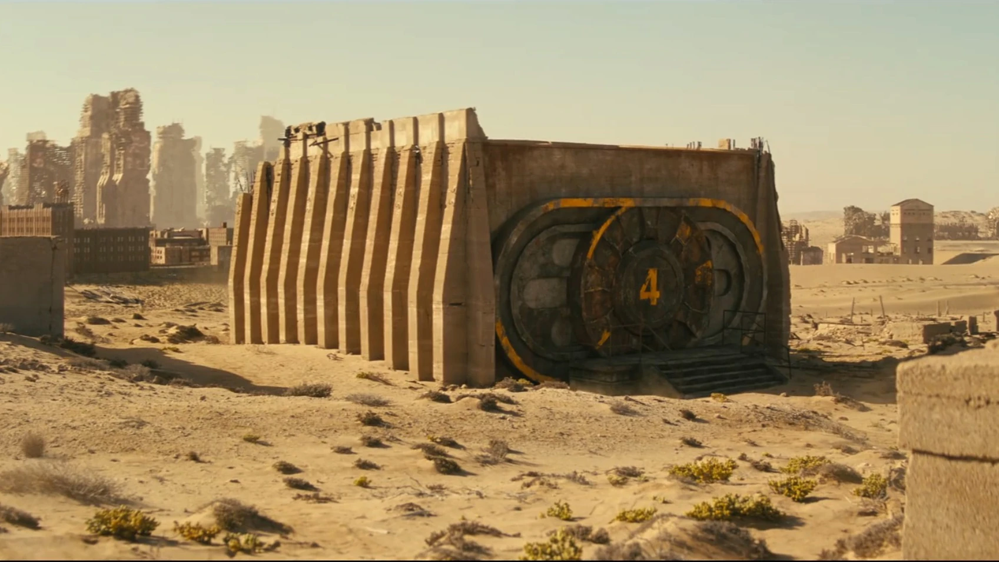
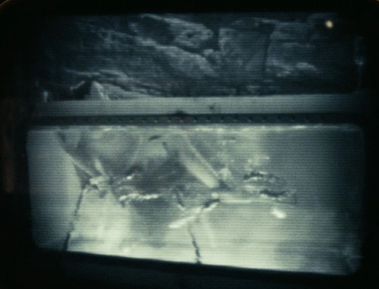
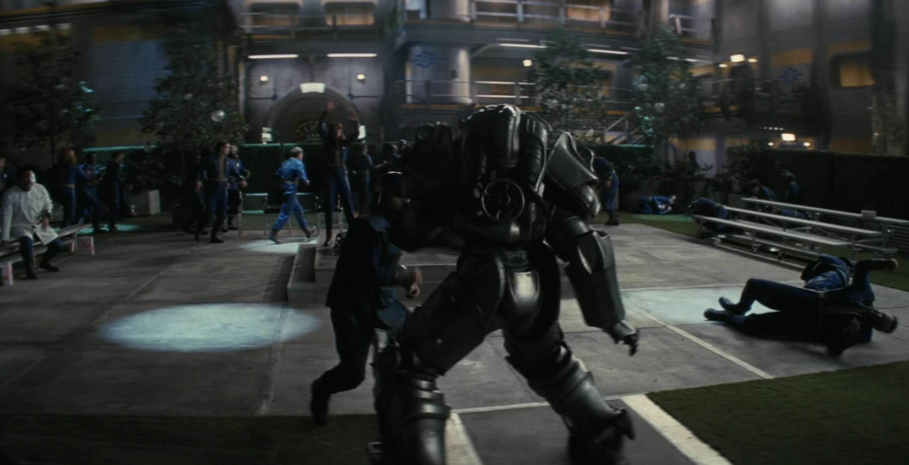
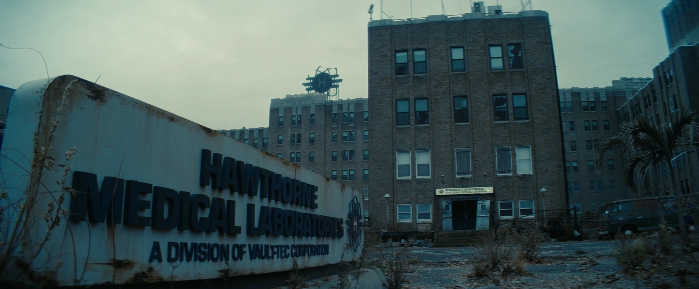

TVシリーズ ロケーション

TVシリーズ ロケーションVault 4
カリフォルニア
元所有者:
Vault-Tec Corporation
人口:
200名（収容能力）
指導者:
ベンジャミン（監督官）
Vault 4 は、カリフォルニア州ロサンゼルスのホーソーン医学研究所（Hawthorne Medical Laboratories）の地下に位置する、Vault-TecコーポレーションのVaultです。Fallout TVシリーズに登場します。
背景
大戦前、Vault 4はVaultのオリエンテーションビデオやテレビ広告に大々的に登場しており、クーパー・ハワードがそのスポークスマンを務めていました。このVaultの実験の目的は広告の中で公に証明されていました。それは「そこでフルタイムで生活し働く科学者たちによって完全に統治される社会（テクノクラシー：技術者支配）」の機能を確認することでした。放射線がDNAに与える影響に関する2人の著名な研究者であるロイド・ホーソーンとカサンドラ・ホーソーン、さらに彼らの2人の子供たちと80人のボランティアが、大戦前の5年間のプレ試験生活にサインアップし、社会がVault内でも生き残れることを世界に示そうとしました。大戦後、ロイド・ホーソーンが正式にこのVaultの監督官（Overseer）となりました。
Vault 4 広告より抜粋 (クーパー・ハワード) ロイド・ホーソーン: 「その通りです。そして我々はここVault 4で生活し、働きながら、科学者だけで統治されるコミュニティを導いていきます」
大戦の日に封鎖されたこのVaultは、Vault実験計画の一環として「科学者だけで統治され、彼らの支配や決定に一切の制限がない社会のあり方」を検証し始めました。しかし、制限のない研究は人体実験をも含む狂気へと繋がり、科学者たち自身の破滅を招きました。科学者たちはウェイストランド人（地上の生存者）をVaultへとおびき寄せ、放射線耐性のある生物と人間を交配させるなど様々な変異実験を被験者に行い、「ガルパー」のような怪物を生み出しました。

（図：被験者476号がガルパーたちを出産する様子）
すべての実験は分析のために克明に記録されました。その中には、実験の被害者の女性が多数のガルパーを出産し、その後分娩タンクの中で彼らに生きたまま食い殺されるという凄惨な映像も含まれていました。こうした実験の残酷さが限界に達し、被験者たちによる反乱が勃発します。被験者たちは変異させられた被害者（怪物）たちを解放し、科学者たちを襲わせました。
革命
Vaultを完全に制圧した元被験者たちは、この場所を人類の向上のために使うことを決定し、民主的なシステムを確立しました。そして「外の世界からの難民を受け入れ、彼らをVault居住者にする」というポリシーを制定しました。恐ろしい実験の後遺症が治せなかった被害者たちは、いつかVaultが治療法を発見できる日を待ち、レベル12のステイシスポッド（冷凍睡眠）に安置されました。革命の生き残りたちは、必要な物資や予備部品を見つけ出す地上探索パーティーの力を借りて、Vaultを維持し続けました。
しかしホーソーンたちの実験による遺伝的ダメージは深刻かつ遺伝性のものであり、彼らの子孫にはランダムな突然変異（鼻や耳などが余分に生える、目が光る、現在の監督官であるベンジャミンのように一つ目になる等）が現れるようになりました。それでも彼らの一般的な知性や言語能力に影響はなく、Vaultで生まれた子供たちの多くは、自分たちこそが真のVault居住者だと考えています。前述のベンジャミンは、ホーソーンを殺したガルパーの親戚（大おじのピーター）であると主張しつつ、自分を第5世代のVault居住者だと誇っています。
この難民受け入れポリシーは何世代にもわたって維持され、「シェイディ・サンズの崩壊」が起きた後には極めて重要な役割を果たしました。爆発から逃れてきた大勢の生存者がVaultに受け入れられ、家族として統合されたのです。
ルーシーとマキシマスの到着
2296年、マキシマスが食人鬼によって腕を撃たれた後、ルーシー・マクレーンは医療品を探すためにホーソーン医学研究所に入ります。しかし二人はかつてホーソーンたちがウェイストランド人を誘い込むために使っていたのと同じ罠（落とし戸）に引っかかってしまいます。
シェイディ・サンズの記憶を悼む血まみれの儀式を目撃したことで不信感を募らせたルーシーは、ベンジャミンが「絶対に立ち入るな」と警告したレベル12を調査することに決めます。一方のマキシマスは熱いシャワーや専用の部屋（ユニット428）、豊富な食べ物を与えられ、ウェイストランドで一度も味わったことのない平穏に魅了され、ルーシーの「掟を破って調査に行く」という提案を拒絶して残ることを選びます。
ルーシーはレベル12に潜入し、大戦前の恐ろしい実験の残骸とステイシスポッドを発見します。また、年代不明のホロテープでガルパー誕生の悲惨な映像を見て、「今の変異した住人たちこそが、あの残虐行為を行った犯人だ」と勘違いしてしまいます。そこへ無断侵入を調べに来たエドマンドソン医師にビーカーの酸をぶつけて負傷させ、駆けつけた他の住人たちに取り押さえられました。

アトリウムでの裁判で、ルーシーにVault 4の実験の真実（変異した住人たちは加害者ではなく、実験の「被害者の末裔」であったこと）が伝えられます。事情を知らなかったとはいえ、住人に危害を加えたルーシーは死刑判決を下されますが、その死刑とは「2週間分の物資を与えて地上に追放する」というものでした。しかしその追放の儀式で鈍らな儀式用の剣が使われていたため、マキシマスは本当に処刑されると勘違いし、動力を盗んで起動したT-60パワーアーマーで暴れ回ってしまいます。
惨状を起こしたにもかかわらず、住人たちは二人を処放する以上の罰を与えませんでした。マキシマスに持ち去られたフュージョン・コアがないとVaultの予備電源は数日しか持たないという状況でも、彼らは力づくでコアを取り返そうとはしなかったのです。ルーシーはVault 4の人々を見殺しにしないためマキシマスを説得し、コアを返却してVault 4へのダストシュートに放り込むことで、彼らの生活を救いました。
レイアウト

Vault 4はホーソーン医学研究所の地下に位置し、メインバンカーへの入り口は付近の砂漠化した平原にあります。研究所の建物内には、かつて人々を誘い込んでVault内へ落とすために使われたダストシュートが残されています。
実際のVaultは識別記号「モデル 96JQ1164」であり、地下12階層から成り立っています。最大の特徴はアトリウムであり、3階分の高さを持つ巨大な共有スペースで、社交の集まりや食事などに利用されます。200人の住民のために設計されており、各家族には大人が2人、子供が2人快適に過ごせる居住ユニットが無数に提供されています。3フィートの鉛のケーシングで守られており、Vault 33などとも似た完全な設備を持ちます。
監督官のオフィスはアトリウムを見下ろす場所にあり、教室などの日常的な施設も繋がっています。Vault 4の住民は核融合プラントなどの重要施設へのアクセスも含めて比較的自由に移動できますが、唯一「レベル12」だけは立入禁止とされています。そこには初代の科学者たちが使っていた研究室や、非倫理的な遺伝子操作の痕跡、そして未だ居住者が眠るステイシスポッドなどが残されています。
開発秘話
エピソード内に登場する黒板には新カリフォルニア共和国（NCR）の出来事の年表が書かれており、シェイディ・サンズの崩壊が2277年と記載されていました。これを見たコミュニティの一部で「本作はゲーム『Fallout: New Vegas』のタイムラインを無かったことにしたのでは？」という混乱が生じました。これに対し、プロデューサーのトッド・ハワードは翌週のIGNのインタビューで明確に否定しました。
トッド・ハワードは「タイムラインの設定には細心の注意を払っています。以前のゲーム（New Vegasを含む）で起きた出来事はすべて正史です。核爆弾が落ちた（崩壊した）のは、New Vegasでの出来事の直後です」と説明しています。
TVシリーズのシーズン2に向けたプロモーションサイト『The World of Fallout』では、Vault 4の教室の黒板の別バージョンの写真が公開されています。そこでは2277年ではなく「2291年：崩壊（The Fall）」と変更された年表が描かれています。
「Hawthorne Medical Laboratories（ホーソーン医学研究所）」という名前から、ロサンゼルス郡のホーソーン市に位置していると考えられますが、実際にはVault 4を運営したVault-Tec科学者のホーソーン一家の名前にちなんで名付けられた可能性が高く、地理的な位置はサンタモニカからも徒歩数日の圏内にあります。
感想 シリーズ史上類を見ないほどまともで思いやりのある人々が暮らすVaultでした 。
> COMMENTS